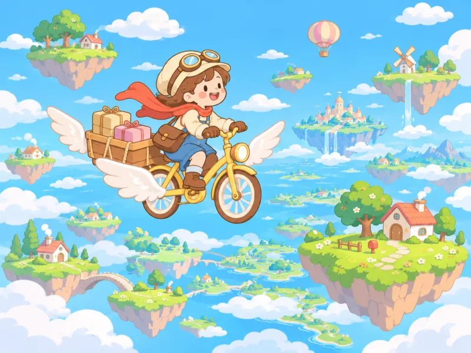
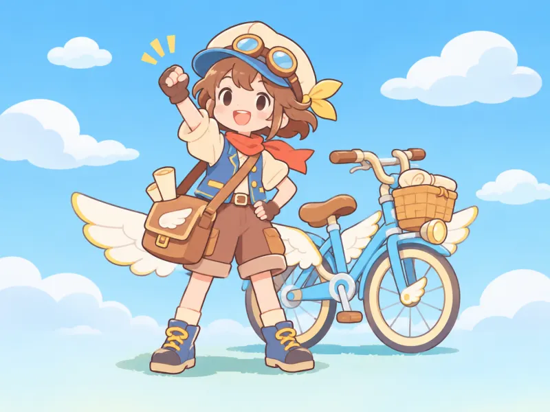
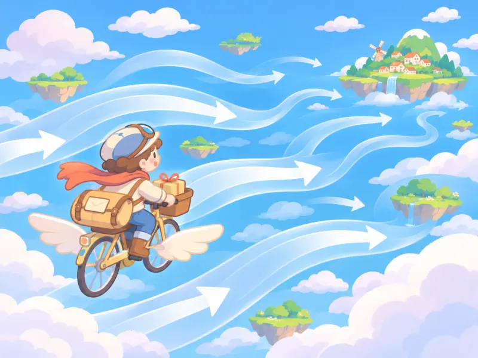
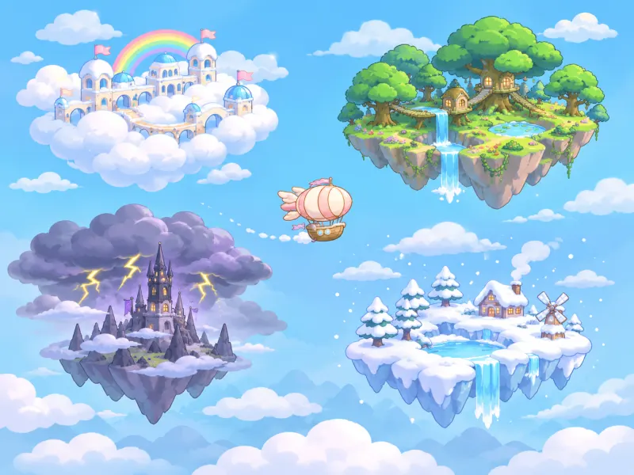
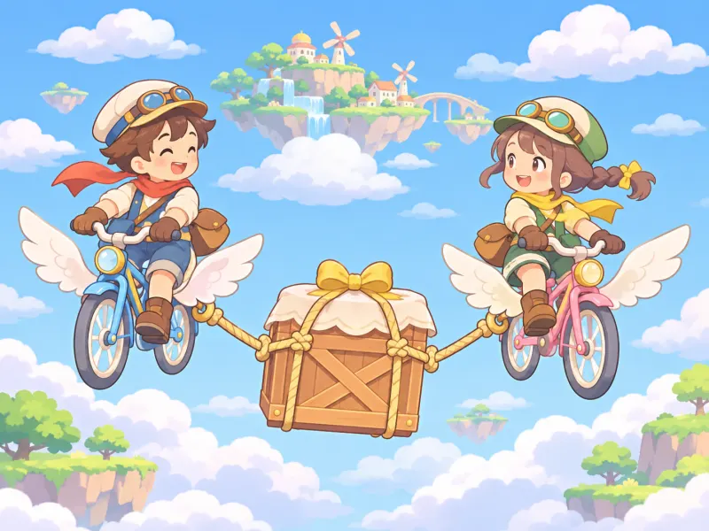
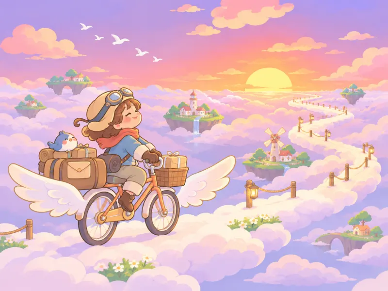

どんなゲーム？
空に浮かぶ島々に、空飛ぶ自転車で荷物を届けるオープンワールド。
空に浮かぶ島から島へ。自転車で荷物を届けるゲーム、あったらいいな

空に浮かぶ島々に、空飛ぶ自転車で荷物を届けるオープンワールド。

見習い配達員。ペダルを速くこぐほど、高く飛べる。

風を読んで最短ルートを探す。荷物をゆらさず運べたらボーナス。

雲の町、浮かぶ森、雷の塔…。島ごとに天気がちがう。

大きな荷物は友だちと2人で。息が合わないと落としてしまう。

ワープは無し。移動そのものが一番楽しいゲーム。